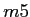
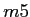
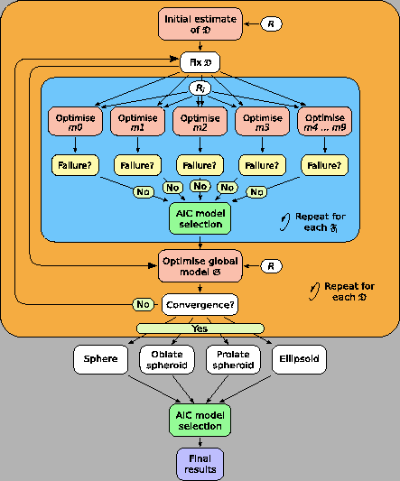
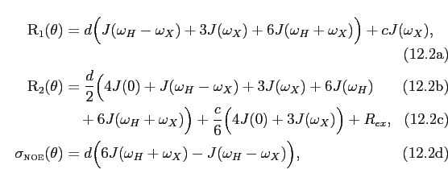
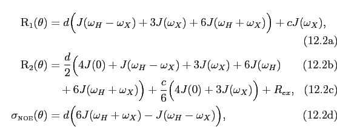
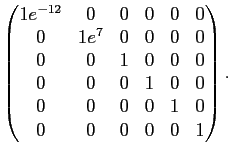
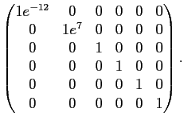
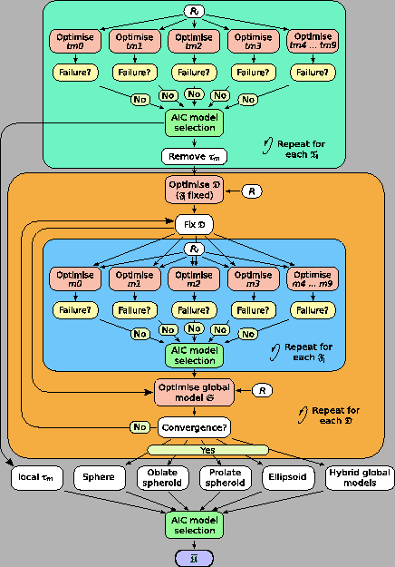

Next: Optimisation of the global Up: The four parameter combinations Previous: Optimisation of the local Contents Index
The parameters of the Brownian rotational diffusion tensor belong to the set
 . This set is the union of the geometric parameters
and the orientational parameters

,
. This set is the union of the geometric parameters
and the orientational parameters

,
|  | (theparentequation.6) |
When diffusion is spherical solely the geometric parameter
 is optimised. When the molecule diffuses as a spheroid the geometric parameters
is optimised. When the molecule diffuses as a spheroid the geometric parameters
 and
and
 and the orientational parameters
and the orientational parameters  (the polar angle) and
(the polar angle) and  (the azimuthal angle) are optimised. If the molecule diffuses as an ellipsoid the geometric parameters
(the azimuthal angle) are optimised. If the molecule diffuses as an ellipsoid the geometric parameters
 ,
,
 , and
, and
 are optimised together with the Euler angles
are optimised together with the Euler angles  ,
,  , and 
.
, and 
.
This category is defined as the optimisation of solely the parameters of
 . The model-free parameters of

are held constant. As all selected residues of the macromolecule are involved in the optimisation, this category is global and can be more complex than the optimisation of
. The model-free parameters of

are held constant. As all selected residues of the macromolecule are involved in the optimisation, this category is global and can be more complex than the optimisation of
 or
or
 . The dimensionality of the problem nevertheless low with
. The dimensionality of the problem nevertheless low with
|  | (theparentequation.7) |
for the diffusion as a sphere, spheroid, and ellipsoid respectively.